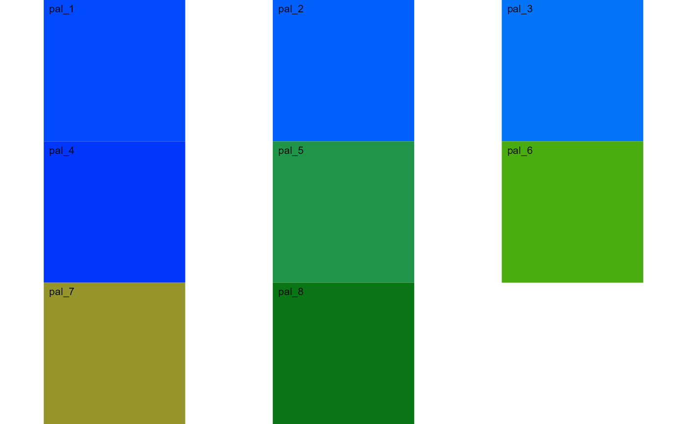
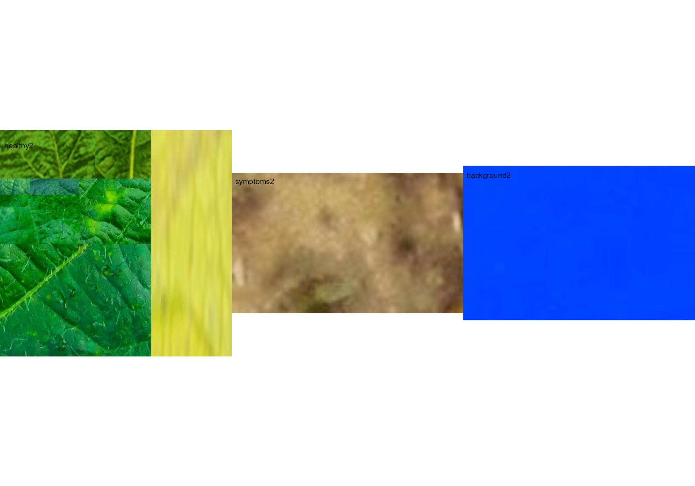

Phytopatometry in R with the package pliman
Tiago Olivoto
2023-09-08
Source:vignettes/phytopatometry.Rmd
phytopatometry.RmdSingle images
library(pliman)
#> The legacy packages maptools, rgdal, and rgeos, underpinning the sp package,
#> which was just loaded, will retire in October 2023.
#> Please refer to R-spatial evolution reports for details, especially
#> https://r-spatial.org/r/2023/05/15/evolution4.html.
#> It may be desirable to make the sf package available;
#> package maintainers should consider adding sf to Suggests:.
#> The sp package is now running under evolution status 2
#> (status 2 uses the sf package in place of rgdal)
#> |==========================================================|
#> | Tools for Plant Image Analysis (pliman 2.0.1) |
#> | Author: Tiago Olivoto |
#> | Type `citation('pliman')` to know how to cite pliman |
#> | Visit 'http://bit.ly/pkg_pliman' for a complete tutorial |
#> |==========================================================|
# set the path directory
path_soy <- "https://raw.githubusercontent.com/TiagoOlivoto/pliman/master/vignettes/imgs"
# import images
img <- image_import("leaf.jpg", path = path_soy)
healthy <- image_import("healthy.jpg", path = path_soy)
symptoms <- image_import("sympt.jpg", path = path_soy)
background <- image_import("back.jpg", path = path_soy)
image_combine(img, healthy, symptoms, background, ncol = 4)
Image palettes
Sample palettes can be created by manually sampling small areas of
representative images and producing a composite image that represents
each of the desired classes (background, healthy, and symptomatic
tissues). Another approach is to use the image_palette()
function to generate sample color palettes.
pals <- image_palette(img, npal = 8)
image_combine(pals$palette_list)
# to extract the color palettes, use the object
plot(pals$palette_list[[1]])
# default settings
res <-
measure_disease(img = img,
img_healthy = healthy,
img_symptoms = symptoms,
img_background = background)
res$severity
#> healthy symptomatic
#> 1 89.27336 10.72664Alternatively, users can create a mask instead of displaying the original image.
# create a personalized mask
res2 <-
measure_disease(img = img,
img_healthy = healthy,
img_symptoms = symptoms,
img_background = background,
show_original = FALSE, # create a mask
show_contour = FALSE, # hide the contour line
col_background = "white", # default
col_lesions = "red", # default
col_leaf = "green") # default
res2$severity
#> healthy symptomatic
#> 1 89.40458 10.59542Variations in image palettes
The results may vary depending on how the palettes are chosen and are subjective due to the researcher’s experience. In the following example, I present a second variation in the color palettes, where only the necrotic area is assumed to be the diseased tissue. Therefore, the symptomatic area will be smaller than in the previous example.
# import images
healthy2 <- image_import("healthy2.jpg", path = path_soy)
symptoms2 <- image_import("sympt2.jpg", path = path_soy)
background2 <- image_import("back2.jpg", path = path_soy)
image_combine(healthy2, symptoms2, background2, ncol = 3)
res3 <-
measure_disease(img = img,
img_healthy = healthy2,
img_symptoms = symptoms2,
img_background = background2)
res3$severity
#> healthy symptomatic
#> 1 93.60094 6.399063Lesion features
res4 <-
measure_disease(img = img,
img_healthy = healthy,
img_symptoms = symptoms,
img_background = background,
show_features = TRUE,
marker = "area")
res4$shape
#> id mx my area perimeter radius_mean radius_min radius_max
#> 1 1 221.2932 113.6153 1055 196.78175 22.547051 0.4551385 39.188063
#> 2 2 189.7992 129.4609 1348 256.72287 20.507733 1.9608514 39.095047
#> 3 3 177.9522 213.3576 3761 483.93102 50.217705 1.1132524 95.141682
#> 4 4 209.8001 193.3800 1849 256.48023 24.092085 0.8183807 42.499524
#> 5 5 263.4416 192.6781 140 45.48528 6.341401 4.1996286 8.487990
#> 6 6 119.6348 201.3764 107 38.79899 5.443297 3.2124865 7.535958
#> 8 8 145.2143 260.5899 78 31.14214 4.572890 3.1616726 5.933840
#> 9 9 210.9303 328.1405 938 150.63961 18.525920 7.5478312 30.504650
#> 11 11 280.2478 324.0523 275 66.35534 9.141496 5.3467341 13.109854
#> 12 12 347.0729 334.8436 299 68.28427 9.477066 5.5989067 13.037281
#> 15 15 183.7065 384.2161 1877 193.85281 25.007188 12.5133631 37.702654
#> 16 16 333.3455 369.3236 159 47.87006 6.824032 4.2509054 9.563495
#> 17 17 249.6779 376.2256 155 49.28427 6.792131 3.3504662 9.605896
#> 19 19 172.3104 449.1970 2268 281.00714 28.704868 12.6353808 47.521881
#> 23 23 109.2359 464.0592 275 75.87006 9.132805 3.4556025 13.855330
#> 24 24 122.6933 492.3163 950 135.22540 18.115428 9.6048023 28.208630
#> 25 25 149.2169 520.1565 1291 163.12489 21.109592 11.0878068 32.762372
#> radius_sd diam_mean diam_min diam_max maj_axis min_axis length
#> 1 11.1857586 45.09410 0.9102769 78.37613 24.250014 6.686744 77.19072
#> 2 9.0640798 41.01547 3.9217028 78.19009 19.638076 10.803031 66.43390
#> 3 25.5104217 100.43541 2.2265047 190.28336 54.793223 12.990055 185.15992
#> 4 10.1910174 48.18417 1.6367615 84.99905 22.474257 13.369129 74.43001
#> 5 1.2350439 12.68280 8.3992571 16.97598 5.316386 3.666070 15.56426
#> 6 1.1769926 10.88659 6.4249729 15.07192 4.418101 3.384440 13.99724
#> 8 0.7598765 9.14578 6.3233451 11.86768 3.693297 2.797797 11.16299
#> 9 6.4749707 37.05184 15.0956623 61.00930 18.000881 7.796665 60.31372
#> 11 2.1472288 18.28299 10.6934682 26.21971 8.010533 4.891625 25.15088
#> 12 2.0659333 18.95413 11.1978134 26.07456 8.155973 5.243377 25.60668
#> 15 7.4629528 50.01438 25.0267262 75.40531 23.058435 12.208033 73.38844
#> 16 1.5154060 13.64806 8.5018107 19.12699 5.820252 3.864262 17.82618
#> 17 1.7733525 13.58426 6.7009323 19.21179 6.038296 3.569584 18.38363
#> 19 9.9028664 57.40974 25.2707615 95.04376 26.453165 14.894944 87.43486
#> 23 2.9177391 18.26561 6.9112051 27.71066 8.354271 4.690852 26.99997
#> 24 5.6631407 36.23086 19.2096045 56.41726 17.095419 8.228898 54.39897
#> 25 6.0686981 42.21918 22.1756136 65.52474 19.273401 10.522473 62.96498
#> width
#> 1 22.627712
#> 2 37.713818
#> 3 45.999071
#> 4 46.451295
#> 5 10.584160
#> 6 9.938491
#> 8 8.372245
#> 9 23.690457
#> 11 14.886043
#> 12 15.607172
#> 15 34.915977
#> 16 11.503184
#> 17 10.645487
#> 19 54.143785
#> 23 14.017916
#> 24 22.490884
#> 25 32.911906
res4$statistics
#> stat value
#> 1 n 17.0000
#> 2 min_area 78.0000
#> 3 mean_area 989.7059
#> 4 max_area 3761.0000
#> 5 sd_area 1008.8768
#> 6 sum_area 16825.0000Interactive disease measurements
An alternative approach to measuring disease percentage is available
through the measure_disease_iter() function. This function
offers an interactive interface that empowers users to manually select
sample colors directly from the image. By doing so, it provides a highly
customizable analysis method.
One advantage of using measure_disease_iter() is the
ability to utilize the “mapview” viewer, which enhances the analysis
process by offering zoom-in options. This feature allows users to
closely examine specific areas of the image, enabling detailed
inspection and accurate disease measurement.
img <- image_pliman("sev_leaf.jpg", plot = TRUE)
measure_disease_iter(img, viewer = "mapview")